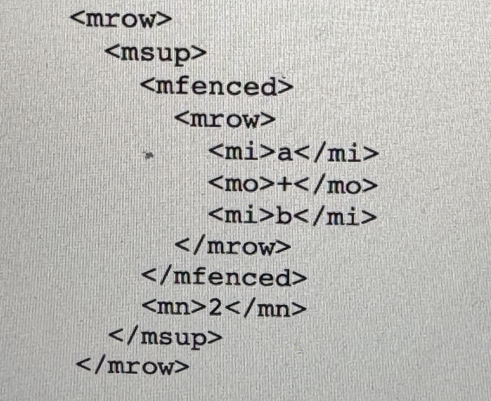

Usage of MathML
MathML is built on XML, which means it follows the same rules and strcuture. But it has some addtional rules defined by MathML's Document Type Definition. It creates an extra level of XML by adding rules for coding mathematical ceoncepts. These specific rules provide more accuracy in displaying mathematical concepts.
MathML uses two types of elements: presentation and content. Presentation elements focus on how math looks, like rows, superscripts, and subscripts. Content elements focus on the meaning, like math operations that involve a base and an exponent. These elements work together to make sure that mathematical content is visually correct and has a clear meaning.
MathML expressions are organized in a tree-like structure. They have parent elements containing child elements that break down into simpler components, like numbers or symbols. Tags like: "mi", "mn" and "mo", are used for identifiers, numbers, and operators, while special elements, like "plus/", represent symbols directly. This structured approach ensures it's accurate visually, and a logical representation of mathematical content.
Example
This example represents (a + b)^2
